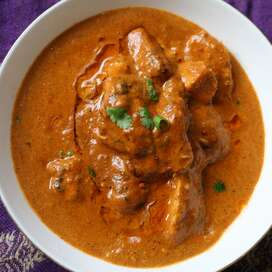

Tikka Masala

Description
Chicken tikka masala is a dish consisting of roasted marinated chicken chunks (chicken tikka) in a spiced sauce. The sauce is usually creamy and orange-coloured.
The dish was popularised by cooks from India living in Great Britain and is offered at restaurants around the world.
Ingredients
- Chicken
- Yogurt
- Cream
- Tomato
- Onion
- Garlic
- Ginger
- Chili Pepper
Steps
- Marinate chicken in yogurt and spices for 4-12 hours ahead of meal
- Saute chicken in steel saute pan, making sure to fully brown and get a good fond going
- After chicken reaches temperature, mix in onions, garlic, and spices to saute and soak up fond.
- Mix in cream, tomato, and reduce by simmering
- Add back chicken and consume!